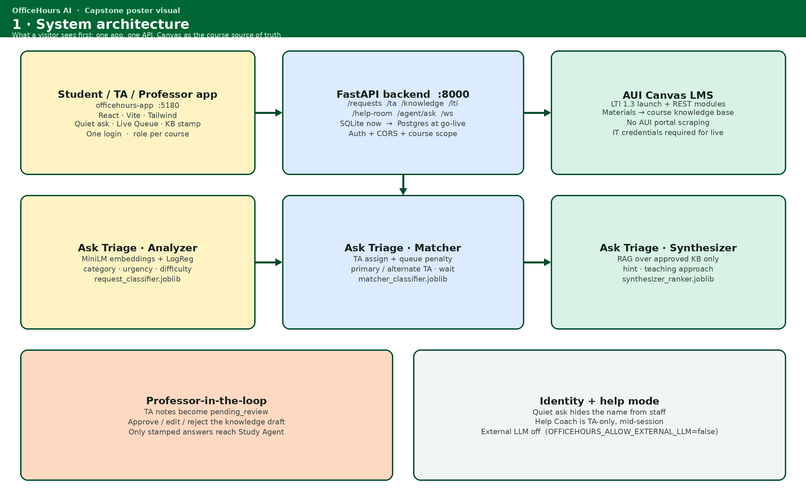
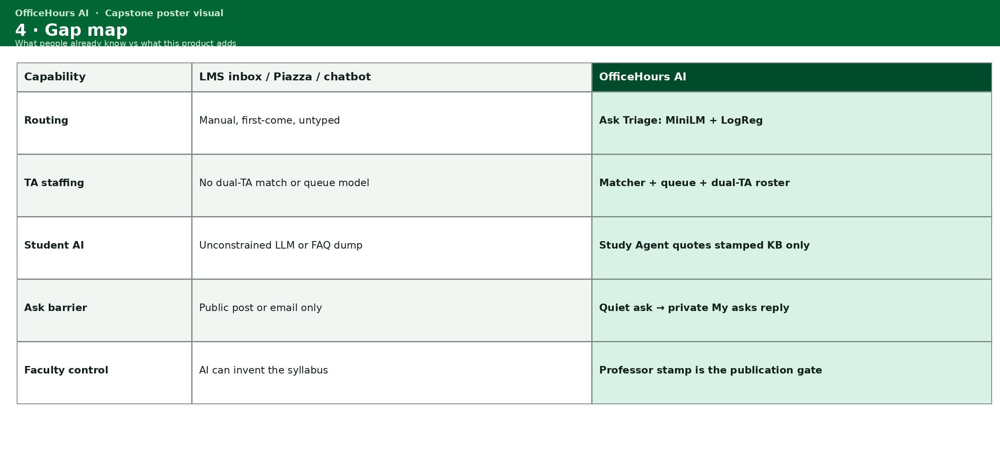
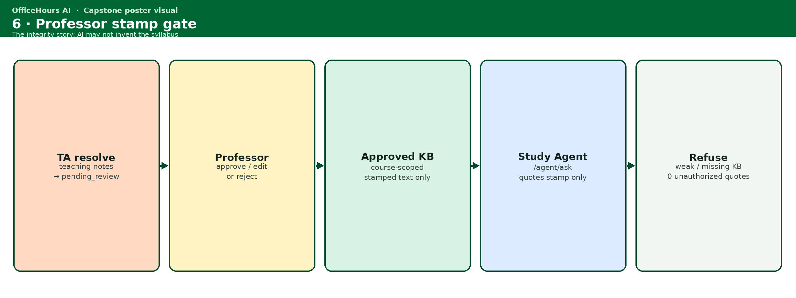
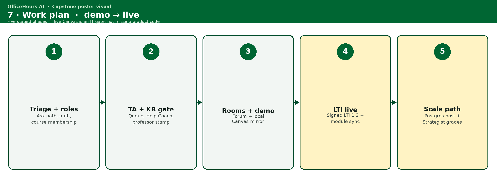
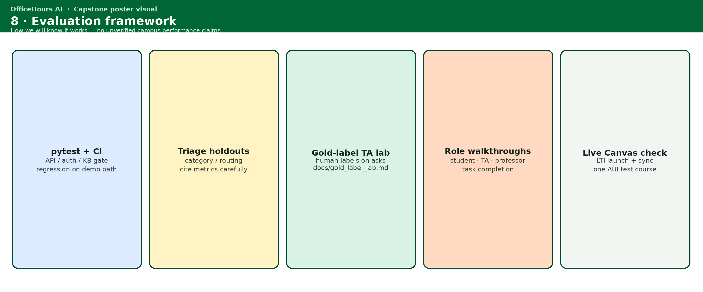
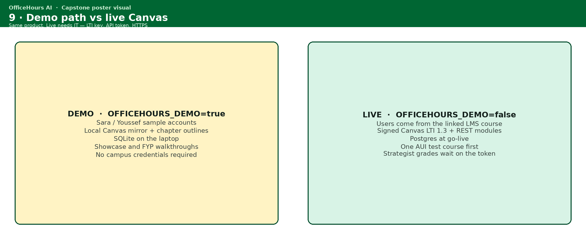

OfficeHours AI — walk-up visuals
Read these first. Same product story as the SSE poster, drawn large enough to see from the aisle.










Read these first. Same product story as the SSE poster, drawn large enough to see from the aisle.





